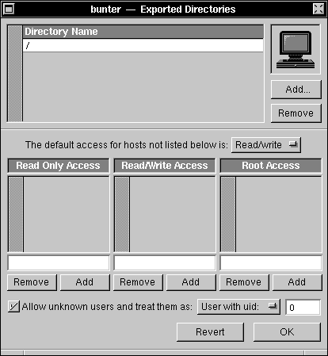
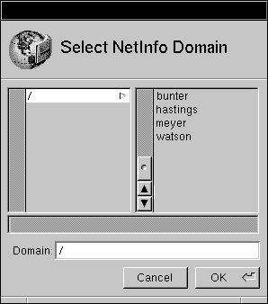
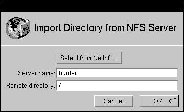

Release 3.3, Prerelease 2 Copyright ©1994 by NeXT Computer, Inc. All Rights Reserved.
| 3.3 Release Notes: Upgrading Remotely Across a Network
If there are several computers on a network that you want to upgrade to Release 3.3, it may be easier to set up a network upgrade server than to connect a CD-ROM drive to each computer individually. Using the RemoteUpgrade utility, you can upgrade multiple computers across a network--even simultaneously--without having to run the Upgrader application on each computer. The RemoteUpgrade utility is intended to be used to speed up the upgrade process for a network of computers with identical hardware and software configurations. If you use this utility to upgrade computers that don't have identical configurations, the upgrade may not be successful--in this case, use the Upgrader application on each individual computer instead. Note: You can't use a NeXT computer as an upgrade server for Intel-based computers, or |
| Creating an upgrade server |
| Start by creating an upgrade server, as described here.
Since the software installed on the upgrade server is copied to other computers, be sure not to customize the server's system software. (Files in the /private directory are treated specially during the upgrade procedure, so normal administrative changes don't pose a problem.) |
| 1. | Upgrade the server to Release 3.3 and then log in as root. | |
| 2. | Copy Upgrader.app from the NEXTSTEP CD-ROM to the server's root folder. | |
| 3. | Start up NFSManager (it's in /NextAdmin). |
|  |
| 4. | Drag the server's root folder from the File Viewer to the icon well in the Exported Directories window. | |
| 5. | Check "Allow unknown users." | |
| 6. | Choose "User with uid:" from the pop-up list and type 0 in the field. Then click OK. |
| ------------------------------------------------------------------------------------ Caution: Setting the "User with uid" option to 0 removes security from the server's file system. Make sure that you've chosen a server where this lack of security is appropriate, and that you reset this option when you're done using the server for upgrading. ------------------------------------------------------------------------------------ |
| 7. | Choose Import To from the NFSManager menu. | |
| 8. | In the Select the NetInfo Domain panel, select the domain that contains the computers you want to upgrade and click OK. |
|  |
| 9. | Click Add in the Imported Directories window. | |
| 10. |
| If you're on a small network, the NetInfo domain of the computers you're upgrading is probably the root NetInfo domain, named "/".
 |
| 11. | Restart the upgrade server. |
| Doing the template upgrade |
| Before upgrading a group of client computers, you need to perform a template upgrade on a single computer first. This upgrade provides RemoteUpgrade with the template files it needs for performing the subsequent client computer upgrades. |
| 1. | Create a network upgrade server as described in Upgrading to NEXTSTEP Release 3.3, Prerelease 2. | |
| 2. | Perform a standard upgrade on one computer as described in Upgrading to NEXTSTEP Release 3.3, Prerelease 2. (We'll refer to this computer as the template computer.) | |
| 3. | Create a folder called RemoteUpgradeFiles on a partition that is NFS-mounted by all the NEXTSTEP computers you wish to upgrade. (We'll refer to this partition as the upgrade partition, and to the computer as the upgrade server.) | |
| 4. | Copy the files /Release3.3 Prerelease2.uplan and /Release3.3 Prerelease 2.uplan.bom from the template computer into the RemoteUpgradeFiles folder on the upgrade server. Rename the two files to /Release3.3.uplan and /Release3.3.uplan.bom respectively. | |
| 5. | Copy the /UpdatedBoms folder from the template computer into the RemoteUpgradeFiles folder on the upgrade server. | |
| 6. | Copy the RemoteUpgrade utility from the root of the NEXTSTEP 3.3 CD-ROM into the RemoteUpgradeFiles folder on the upgrade server. |
| Setting up client computers for remote command execution |
| To execute remote commands as the root user, you need to add a line to the /.rhosts file of each client computer containing the hostname of the server you will be running the RemoteUpgrade utility from. See the UNIX manual page for hosts.equiv for more details. |
| Performing remote upgrades |
| Once you've done a template upgrade and have set up the client computers for remote command execution, your ready to start upgrading! Log into the upgrade server and become root in a Terminal window. Run RemoteUpgrade once per client computer, using the following syntax: |
 path/RemoteUpgrade client_computer upgrade_partition
path/RemoteUpgrade client_computer upgrade_partition
| where path is the full NFS-mounted path (visible from the client) to the RemoteUpgradeFiles folder, client_computer is the hostname of the client computer to be upgraded and upgrade_partition is the NFS-mounted path to the upgrade partition on the upgrade server.
------------------------------------------------------------------------------------ |
| Performance considerations |
| For best upgrade performance, follow these guidelines: |
| The upgrade server should be on the same subnet as the client computers. | ||
| You should perform no more than 20 upgrades concurrently, in order to avoid saturating the network bandwidth. Otherwise, performance degredation could cause the upgrade processes to fail. |